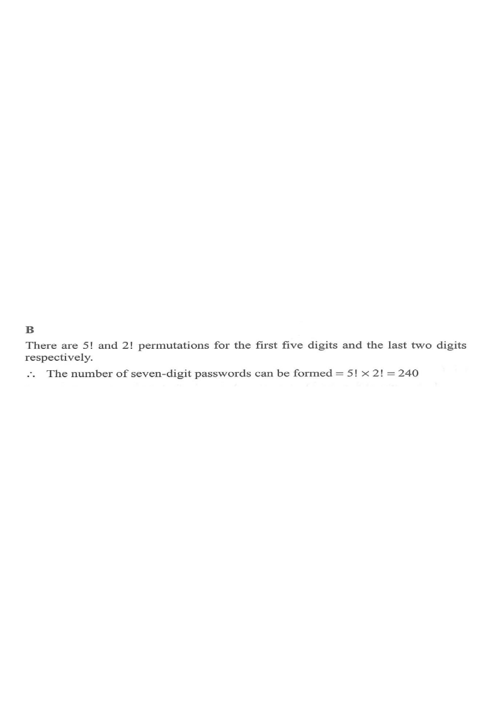

If the first five digits and the last two digits of a seven-digit password are formed by
a permutation of $1,\ 3,\ 5,\ 7,\ 9$ and a permutation of $2,\ 8$ respectively, how many
different seven-digit passwords can be formed?
A. $10$
B. $240$
C. $480$
D. $5\,040$

Figure (original exam diagram)
1 Split the password into two blocks
A seven-digit password is divided into the first five digits and the
last two digits. These two blocks are filled independently:
\[ \underbrace{\square\;\square\;\square\;\square\;\square}_{\text{5 digits from }\{1,3,5,7,9\}}
\;\underbrace{\square\;\square}_{\text{2 digits from }\{2,8\}} \]
The digits used in each block are prescribed — block 1 uses only odds, block 2 uses only 2 and 8.
2 Count the first five digits (arrangements of 1,3,5,7,9)
Arrange 5 distinct digits into 5 positions — an ordered arrangement of all
Permutation of Distinct Objects\({}^{n}P_{n}=n!\)All five odd digits are used and order matters, so there are \(5!=120\) arrangements.
Multiplication Principle\(N=n_{1}\times n_{2}\times\cdots\times n_{k}\)The two blocks are filled independently, so \(5!\times2!=240\).
The two blocks are chosen independently, so multiply the numbers of arrangements:
\[ 5! \times 2! = 120 \times 2 = 240 \]
Independent stages ⇒ multiply the counts (fundamental counting principle).
5 Conclusion
The number of different seven-digit passwords is
\[ 240 \]
which matches option B.
A quick sanity check: total permutations of 7 distinct digits would be $7!=5040$ (option D), but here the digit sets for each block are fixed, so it is $5!\times2!=240$.
Answer: B ($5!\times 2! = 240$)
PRACTICESimilar question — try it yourself
Question. If the first four digits and the last three digits of a seven-digit password are formed by a permutation of \(2,\,4,\,6,\,8\) and a permutation of \(1,\,5,\,9\) respectively, how many different seven-digit passwords can be formed? A. \(24\) B. \(144\) C. \(720\) D. \(5\,040\) [1 mark]
Show the worked solution
Step 1. Split the password into a block of \(4\) digits (from \(2,4,6,8\)) and a block of \(3\) digits (from \(1,5,9\)); the blocks are filled independently.
Step 2. First block: arrange the \(4\) distinct digits, \(4!=24\) ways.
Step 3. Second block: arrange the \(3\) distinct digits, \(3!=6\) ways.